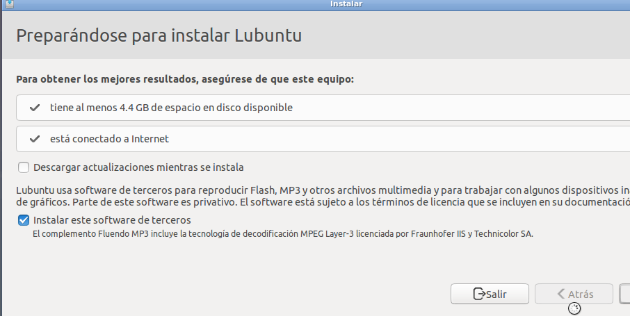
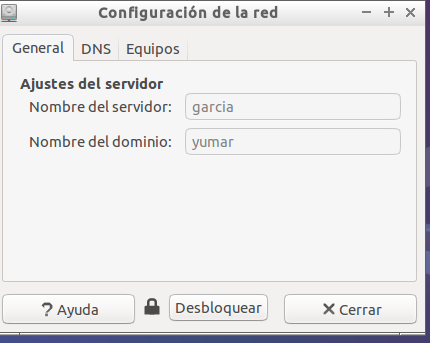
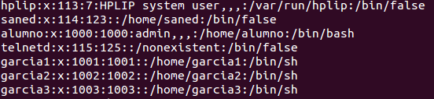
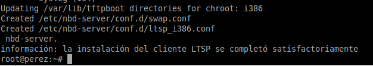
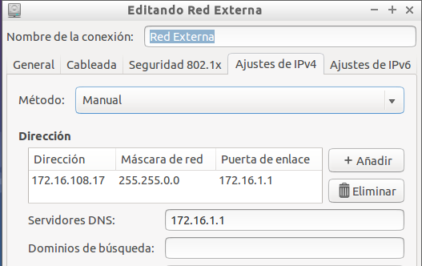
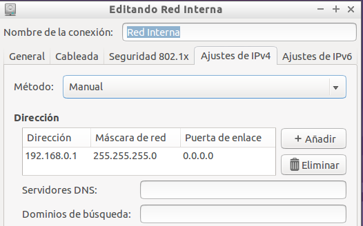
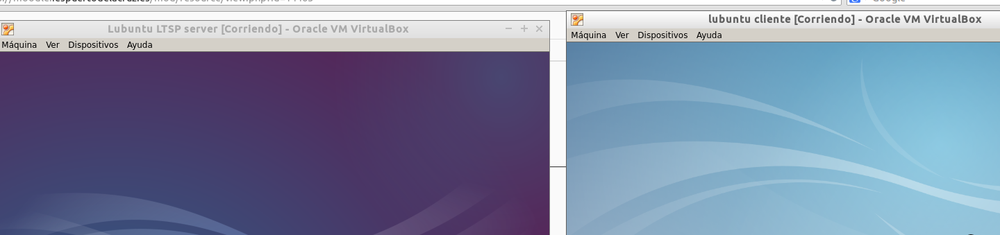

- Módulo: Administración de Sistemas Operativos
- Título del trabajo Clientes ligeros
- Componentes del grupo: Alejandro Garcia Yumar
- Curso Académico: 2014/2015
- Fecha de entrega: 25 de Enero de 2014
En esta práctica vamos ha instalar dos sistemas operativos Lubuntu; uno será el servidor Ltsp del cliente ligero y la otra máquina será el cliente
 Una vez instalado el sistema operativo vamos a la configuración en la consola de comandos. Instalamos los programas de Ltsp server y además creamos varios usuarios, que servirán para conectarse con el cliente ligero.
 Para finalizar la configuración en consola vamos ha configurar las ips de los adaptadores de red; el adaptador de red externa y el de red interna. El cliente también debe tener el adatador de red interna.
 Una vez terminada la configuración del servidor de Ltsp, comprobamos que el arranque del cliente Ltsp funciona correctamente.
